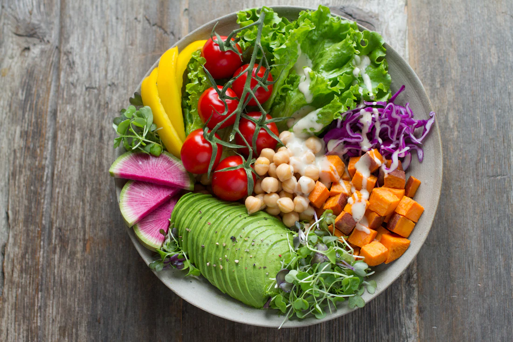

What’s actually in your order?
Use one complete meal to compare sauces, sides and drinks fairly.
Compare restaurant mealsFood choices, made clearer.
Compare restaurant meals by calories and protein, or work out your daily targets with our free calculators.
U.S. restaurant menus. No account needed.

Compare the exact items we track, then check your restaurant’s current menu for changes.
You don’t need a perfect diet or a calorie target to get started.
Tell the meal finder your preferences, appetite and restaurants.
See the nutrition, check the portion and choose the meal that works for you.
Use one complete meal to compare sauces, sides and drinks fairly.
Compare restaurant mealsLearn to adjust a food label to the portion you actually eat.
Read a nutrition labelUnderstand what a calorie estimate can tell you—and what it can’t.
Understand calorie targetsPut different serving sizes on the same basis before choosing.
Compare food labelsDivide a recipe’s total nutrition by the number of portions you make.
Calculate per portionEnter prices from your shop to compare the cost of a gram of protein.
Compare protein value